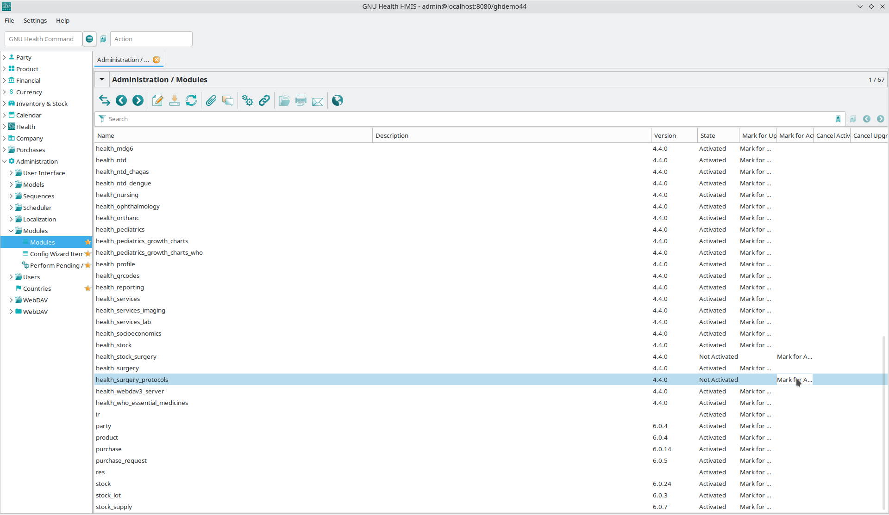
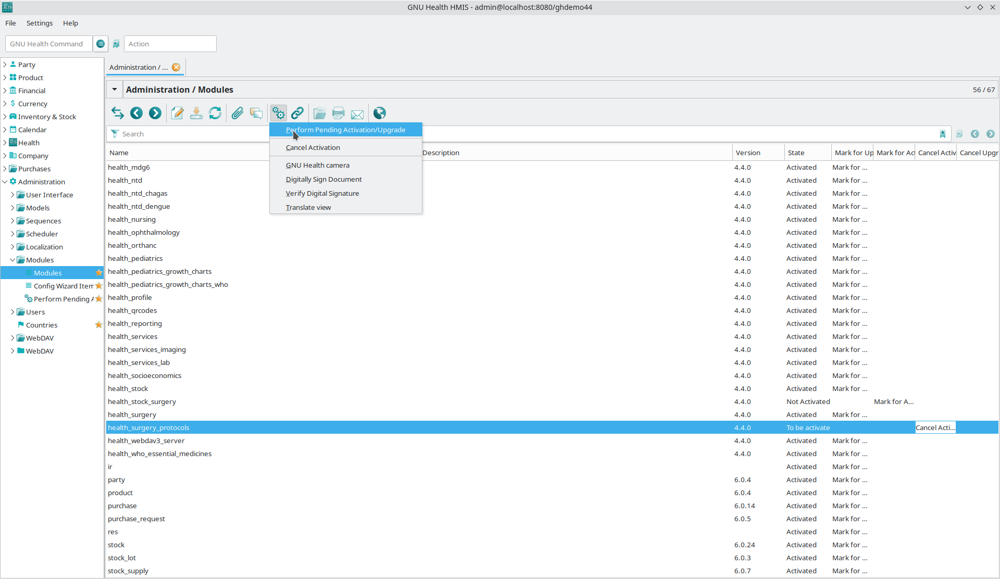

Modules
Activating Modules
The default modules of GNU Health are just a subset of the modules available and provide basic functionality. Depending on your health institution, you will most likely want to install some of the other modules that come with GNU Health.
Open the menu in Administration → Modules → Modules to see the list of available (installed) modules. Then mark the desired module for activation and perform the activation:




Some modules are depending on other modules: You can not install this module without having installed the other modules as well. You can see these dependencies by double-clicking on a module in the Administration → Modules → Modules section.
For example: The module health_inpatient_calendar (which adds caldav support to the inpatient management functionality) depends on health_inpatient (which privides the basic inpatient management functionality) and health_calendar (which implements the basic caldav functionality).
If you mark a module for activation that is depending on other not activated modules those are activated automatically as well.
Custom Modules
If you are a software developer, you can customize existing modules or develop your own custom modules according to the needs of your health institution. For more information, please refer to the section Submitting Patches.
Customizing and Creating Your Own Modules
Chances are that if you are installing GNU Health for your center, you will be customizing it to meet your specific needs. Reports, access control rules and views are just some of the objects that are normally customized. The main concept is to not edit the standard code or modules, since it will be overwritten in the next update and most probably will end up in a broken system.
The recommended steps to customize GNU Health to your center are:
Create your module: It’s recommended that you use the following naming convention for your local modules:
z_health_<modulename>. For example, if your project is called catalina, your local module name would bez_health_catalina. This way makes is easy to detect and differentiate your modules from the base code. You can also easily make backup of them following the pattern.Inherit the objects.
Modify or create new models.
If you create a new custom field, you should also use the z_<fieldname> naming convention. This avoids collision with future field names of the official releases. We will not use any module, class, or model name starting with z_.
The “local” modules directory
There is a directory called local under ~/gnuhealth/tryton/server/modules. Please put your local modules that contain the customizations for your project under this directory. When using this approach, it makes sure that the update procedure does not overwrite your packages.
Make sure modules in local directory are linked to ~/gnuhealth/tryton/server/trytond-<VERSION>/trytond/modules directory, the below command will relink local modules.
$ cdutil
$ ./gnuhealth-control update
if gnuhealth-gui do not show local modules, user can try below command to update modules lists:
$ cdexe
$ ./trytond-admin --update-modules-list -d <DB>
Also, sometimes you might want to include another existing package from Tryton or the community. This local modules directory is the place to place them.
Please note that can only support those packages that are included on each GNU Health HIS distribution.